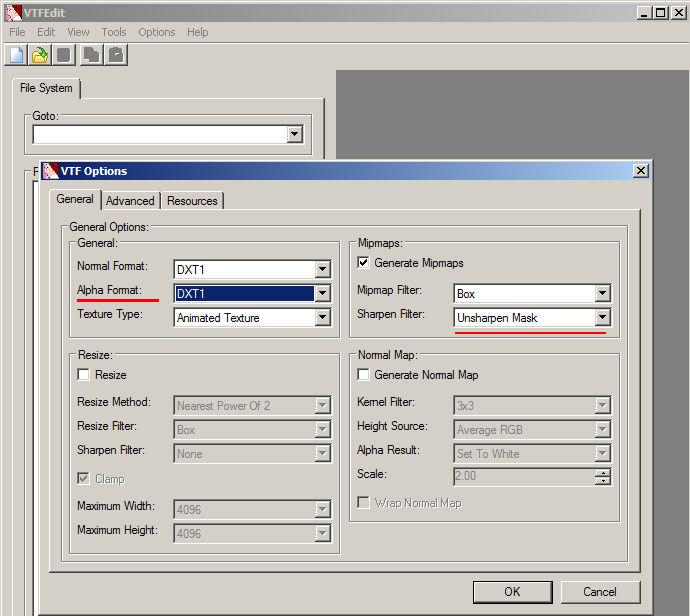
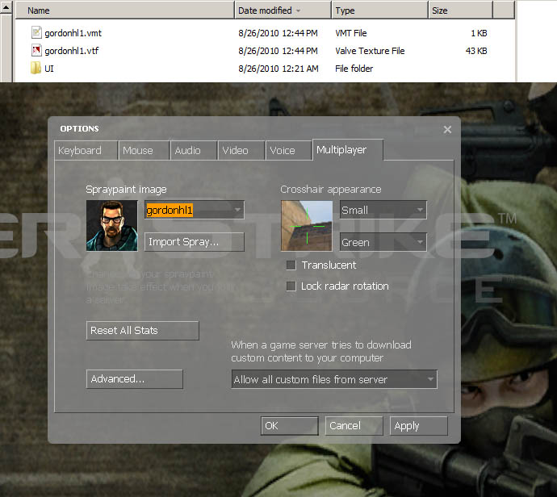

Tutorial 1: Creating a Static Spray
Our first tutorial is creating a static spray with no transparency. For a couple of newer source games you can make a spray at 512X512 resolution, but for the sake of compatibility, I will be making this image in 256X256 resolution.
Open your image into photoshop and select a square region of what you want for your spray. To make a perfect square selection hold shift-leftclick and drag your area. Then go to Image menu and "crop".
Go to Image menu again and select "Image size...". In this menu set the pixel dimensions to 256X256 (Note: If your image is not 72 pixels/inch resolution set it before setting the dimensions to 256X256). Under "Resample image" I like to set "Bicubic Sharper" since it scales better.
With the image now reduced to proper spraylogo size, we can now do some enhancements. Here I have already done some "Image Levels" adjusting (can be done either by Ctrl-L or an adjustment layer). Here I am using the filter "Unsharpen Mask". Use of this filter depends on the image and personal taste. For enhancing fine detail use a smaller pixel radius, and for overall detail/contrast enhancing use a larger pixel radius. Play with the amount and threshold until you reach your desired sharpness. In general, spraylogos with more contrast & sharpness tend to look better because when the image gets converted to VTF, it gets compressed making image-artifacts (jpeg-looking blocks) in low-contrast areas.
Save the image as a 24-bit targa file.

Open up VTFEdit and go to File>Import. Import your saved targa file. You will get this menu which is the options for conversion from targa to VTF. On your left set the "Alpha Format" to "DXT1". DXT1 is for no alpha channel since our image has no transparency. On the right is "Generate Mipmaps". As stated earlier, mipmaps create smoother looking images at distances and scaling so we are gonna want this box checked. By default the mipmap sharpen filter is set to "sharpen soft" which is overall great, but looks a little off with some images (especially with line-art imagery) and you have no control. I personally use "Unsharpen Mask" since VTFEdit gives you the option to adjust the settings manually in the next tab.

In the advanced options tab we have the Unsharpen Mask options, however there is no real-time preview like in photoshop so your gonna have to do a bit of guessing. As for VTF version, you should have it a low version like 7.2 since some older source games are not able to read 7.3+ versions of VTF files. The version does not affect image quality. The versions are only really important for other ingame textures with things like spritesheets and other resources, so it does not matter in our case.
Once we hit OK the image is processed. Here we have the VTF file. You can right-click to zoom in to the image if you like.
If we select the mipmap number and use the up and down arrow keys, we can cycle through the mipmap images. If you are not satisfied with how your sharpening went, go and import your tga again and adjust the mipmap sharpening options. When done inspecting, set it back to 0 (full image).
Now a very important step is setting the image flags. Clamp S & Clamp T keep the image edges from "wrapping" around and giving a thin line at the top, bottom, left & right of the image. Its not particularly noticeable in sprays like this but can be a problem with transparent sprays that go to the image boundaries (An example of this problem can be seen here). No Level Of Detail is probably the most important flag you want to check. Without this checked, your sprays quality will be adjusted by the games texture resolution settings. Lastly, image flags can be set to existing VTF files and saved without having to recompile the image.
{kind=link}
Save the image to your desired game's spraylogo directory. You saw earlier the spraylogo directories (click here)

If done right, the spraylogo should turn out to 2 files: A VTF and a VMT. By default VTFEdit should have "Auto Generate VMT file" under the Options menu. If you don't have a vmt, the game will not read the texture. When you launch your game, go to the multiplayer tab and select your spray from the menu.
Now here is your finished spray in game!